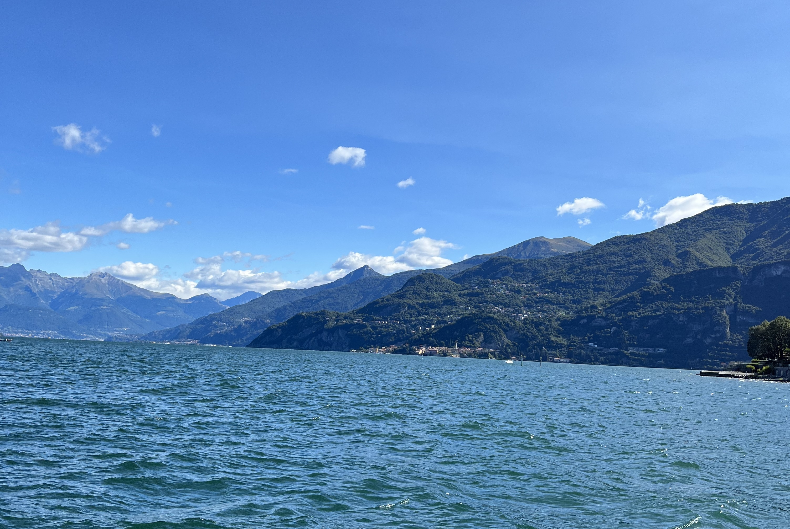

Lago di Como, Italy
Hurry!
Bellagio

Bellagio, often referred to as the 'Pearl of Lake Como,' graces the promontory between the southern branches of the lake. Positioned at the northern tip of the Larian Triangle— an area resembling a triangle at the base of the lake's inverted Y—Bellagio offers captivating vistas of the northern arm of Lake Como and the majestic Alps that stand behind it, a feature that has long contributed to its fame.
The town's central alleys bustle with an array of shops and boutiques offering local delicacies, leather goods, fashionable attire, perfumes, and more.
Amidst this charming setting stands the captivating Basilica di San Giacomo, a traditional Romanesque church constructed between the 11th and 12th centuries. Adorning its sacred space are a precious late 1500s altar and remarkable mosaics from the early 1900s, drawing the eye of every visitor.